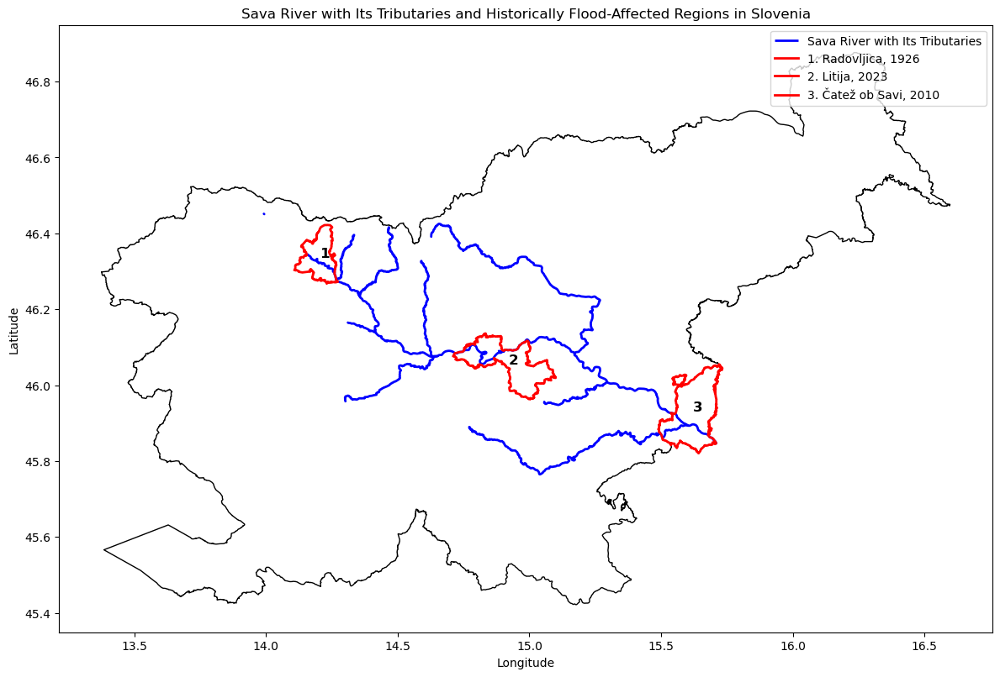
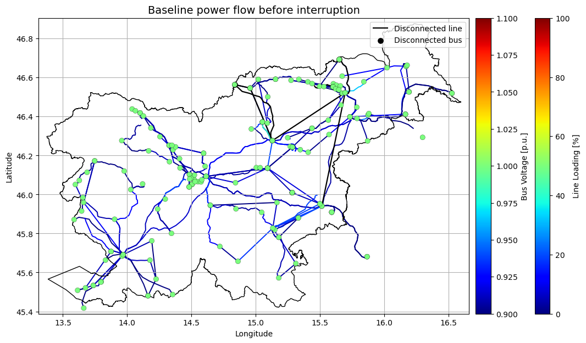
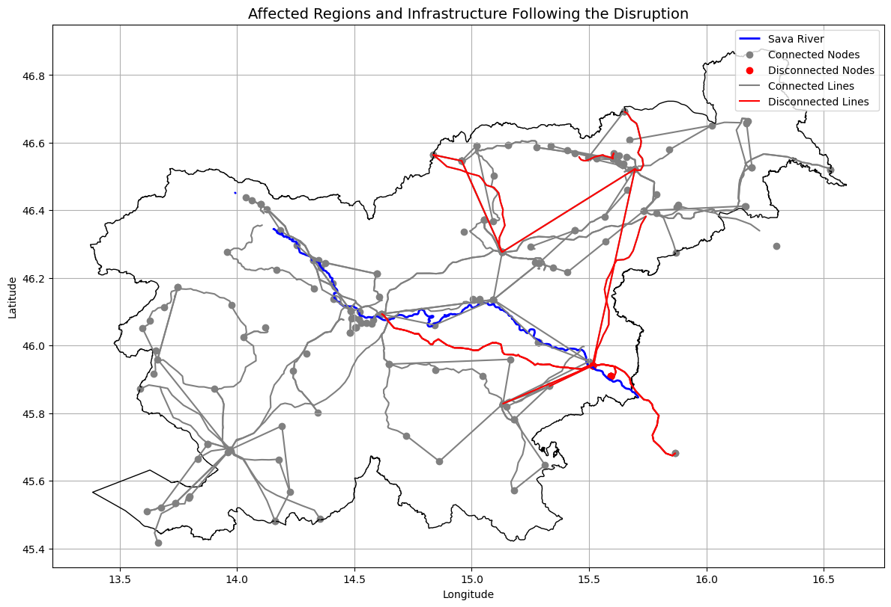
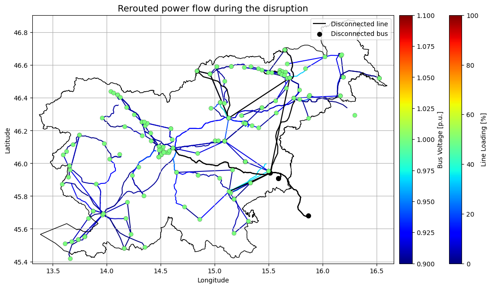
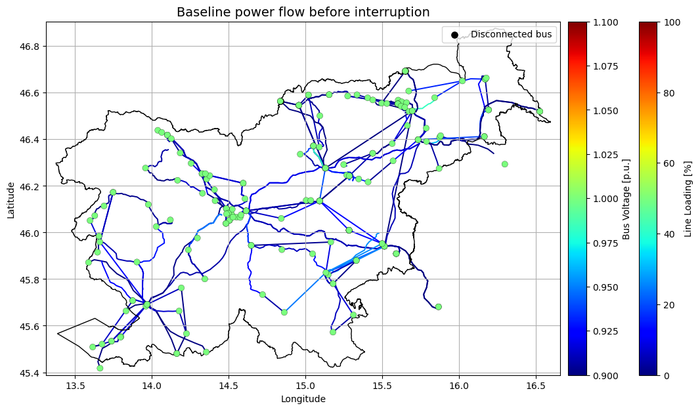
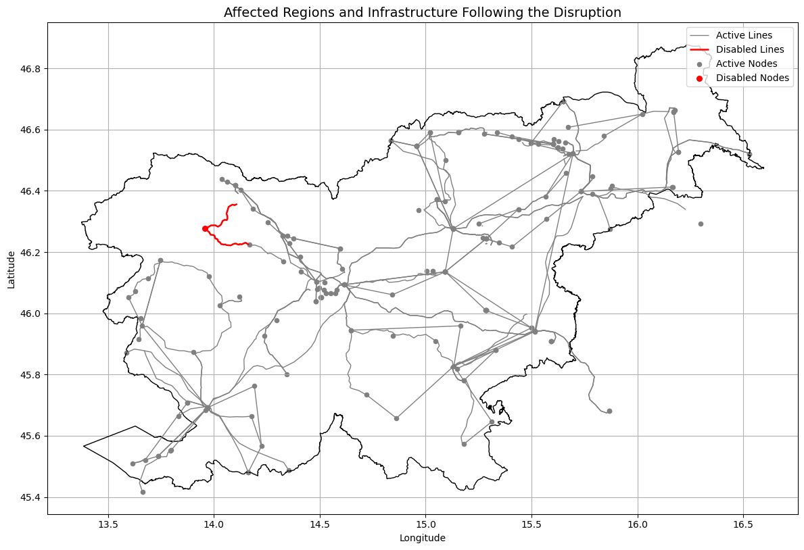
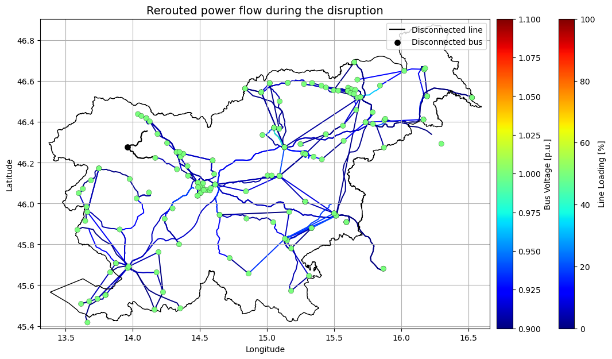
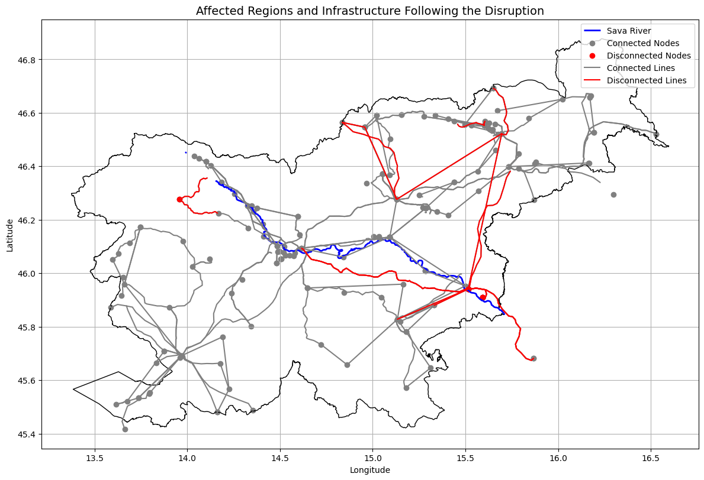
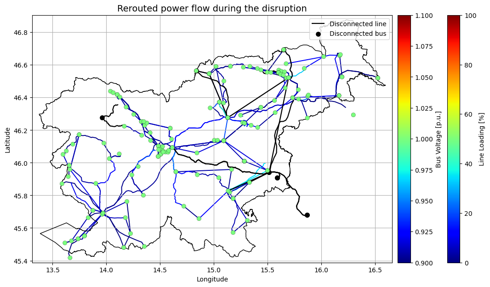

Use Case 5 - Flooding and landslides in Slovenia#
This notebook evaluates the vulnerability of Slovenia’s electricity transmission system to both single and compound natural hazards. It allows to simulate historical floods in the upper, middle, and lower Sava River regions, a simultaneous three‑region worst‑case flood, a single‑point‑of‑failure landslide, and a combined flood‑and‑landslide scenario. Both hazards can result from extreme rainfall, which is projected to intensify in the future, and present risk conditions typical for Slovenia.
1. Introduction#
In this UC5 simulation, we assess the impacts of severe flooding along the Sava River and associated landslides on Slovenia’s electricity transmission system, considering both hazards individually as well as their combined effects. The spatial extents of the hazards are based on historical events; however, the simulated intensities are intentionally more extreme to represent plausible future conditions under a changing climate. Floods and landslides are both frequently triggered by prolonged or intense precipitation, and their co-occurrence can lead to compound impacts that significantly increase system vulnerability.
2. Hazard Characterisation: Flooding#
Based on historical evidence and recent analyses, the Sava River in Slovenia has shown a pattern of flooding that varies by region and season. A detailed analysis of historical floods along the Sava River in Slovenia can be found in the paper titled “ Analysis of floods on the Sava River in the historical record” by Mira Kobold (2024). It documents the largest floods in the upper, middle, and lower courses of the river, including:
30 October 1926 in Radovljica (upper Sava corridor)
4 August 2023 in Litija (middle Sava corridor)
19 September 2010 in Čatež (lower Sava corridor)
The study notes that major floods have occurred almost every decade since the 1970s, with the August 2023 flood being the first major summer flood event on the Sava River.
The predefined simulation allows selecting either individual major‑flood regions or a combined worst‑case scenario. While the spatial footprints of these scenarios draw on historical observations, the flood intensities used in the model are intentionally enhanced and do not replicate any specific historical event. In all configurations, substations located within a 5‑km hazard impact zone are assumed to be disconnected, establishing the initial network‑level disturbance. This substation outage triggers further consequences at the asset-level through line overloads (equipment protection), and ultimately leads to systemic‑level impacts such as generation losses and demand interruptions.
plot_regions(current_folder, "SI")

Import complete UC5 pandapower network#
The Slovenian electricity transmission grid is loaded from a compressed pickle file that contains the complete pandapower model. This file integrates ENTSO‑E‑based network topology, OSM‑derived geometries, LAU‑level regional updates, spatially distributed national consumption data, and the economic and temporal profiles of power plants including regulation strategies and energy storage integration consolidated into one unified dataset.
net = pp.from_pickle(os.path.join(current_folder, "inputs/pickle_files/uc5_network.p"))
print(net)
# Save net SI single-state:
net_single_state = net.deepcopy()
# Save net bus and line copies for network reset
net_bus_copy = net.bus.copy()
net_line_copy = net.line.copy()
# Fix geodata
fix_geodata(net)
This pandapower network includes the following parameter tables:
- bus (191 elements)
- load (212 elements)
- storage (3 elements)
- gen (91 elements)
- line (282 elements)
- trafo (28 elements)
- poly_cost (94 elements)
- line_geodata (282 elements)
- bus_geodata (191 elements)
Import load profiles#
The load profiles for Slovenia are imported from a compressed pickle file, derived from the original dataset used in the EU‑wide model. The load mapping to locations of demand is performed using the KdTree Nearest Neighbour Search with additional focus on prioritizing load mapping to 110kV level.
# Import load profiles
load_profiles = pd.read_pickle(os.path.join(current_folder, "inputs/pickle_files/load_profiles_uc5.pkl"))
start_time, end_time = define_interval(load_profiles)
load_profiles = load_profiles.loc[start_time:end_time]
Start time: 2020-08-01 00:00:00
End time: 2020-08-08 00:00:00
Run flood impact simulation#
# Run predefined_simulation
#chose one of the flooding scenarios (upper/middle/lower/all) that will be used for the rest of the notebook
simulation_type = "lower"
pf_results = run_predefined_simulation(net, current_folder, "SI", pd, load_profiles, pf_res_plotly, time_series_calculations, simulation_type)

affected nodes:
Index([9, 39, 48, 77, 78, 79], dtype='int64')

Best generator index: 39, max_p_mw: 423.0400203072779

Case Study Results#
case_study_results(simulation_type)
Case study results (DC_OPF_results_lower_Sava.xlsx)
Total generator costs : 1.53 million €
Max line loading : 61.10 %
Indirect losses : 0.63 million €
Energy not supplied : 2143.10 MWh
Network and Asset-level risk assessment#
disconnected_elements(net)
Disconnected elements:
Buses : 6 (400 kV: 1, 110 kV: 5)
Lines : 26 (400 kV: 10, 220 kV: 1, 110 kV: 15)
Loads : 2
Gens : 10
Generators on disconnected buses: Brezice - Gen 3, KRS - O_RES, NEK, Mokrice - Gen 2, KRS - PV, KRS - O_nonRES, Mokrice - Gen 1, Mokrice - Gen 3, Brezice - Gen 2, Brezice - Gen 1
Systemic-risk assessment#
disruption_diagnostics(net)
Systemic impact (share of national total):
Load not supplied : 0.97 %
Generation lost : 21.98 %
Buses out : 3.14 %
Lines out : 9.22 %
3. Multi Hazard Risk Assessment: Landslides#
The floods in Slovenia in 2023 were caused by severe rainfall that also triggered numerous landslides in different parts of the country. While these caused no additional major outages of the power grid, this may happen in the future as rainfall becomes more intense under climate change. In the example below we showcase how an additional failure of a substation would affect the system.
# Reload the baseline state of the power network
net = pp.from_pickle(os.path.join(current_folder, "inputs/pickle_files/uc5_network.p"))
# Fix geodata
fix_geodata(net)
# Run predefined_simulation
# Choose which substation fails due to a potential landslide event
failed_substation = "BOHINJ" #this can be changed to another substation to simulate an alternative scenario
pf_results = single_point_of_failure(net, current_folder, "SI", pd, load_profiles, pf_res_plotly, time_series_calculations, simulation_type, failed_substation)

[apply_node_outage_by_name] New slack generator index: 33, max_p_mw: 703.0


Results of the single point of failure (landslide) analysis
case_study_results("SPOF")
Case study results (DC_OPF_results_SPOF.xlsx)
Total generator costs : 1.75 million €
Max line loading : 53.08 %
Indirect losses : 0.17 million €
Energy not supplied : 752.75 MWh
disconnected_elements(net)
Disconnected elements:
Buses : 1 (110 kV: 1)
Lines : 2 (110 kV: 2)
Loads : 1
Gens : 0
Generators on disconnected buses: none
disruption_diagnostics(net)
Systemic impact (share of national total):
Load not supplied : 0.38 %
Generation lost : 0.00 %
Buses out : 0.52 %
Lines out : 0.71 %
4. Compound hazard: Flooding and Landslides#
This last example shows the compound effect of both flooding and landslide events in the network system.
#reload the baseline state of the power network
net = pp.from_pickle(os.path.join(current_folder, "inputs/pickle_files/uc5_network.p"))
# Fix geodata
fix_geodata(net)
# Run compound hazard failure simulation
pf_results = run_predefined_simulation(net, current_folder, "SI", pd, load_profiles, pf_res_plotly, time_series_calculations, simulation_type, failed_substation)
[apply_node_outage_by_name] New slack generator index: 33, max_p_mw: 703.0
affected nodes:
Index([9, 39, 48, 77, 78, 79], dtype='int64')

Best generator index: 39, max_p_mw: 423.0400203072779
[apply_node_outage_by_name] New slack generator index: 39, max_p_mw: 423.0400203072779

Results of the multi-hazard (floods and landslides) risk assessment
case_study_results(simulation_type)
Case study results (DC_OPF_results_lower_Sava.xlsx)
Total generator costs : 1.52 million €
Max line loading : 60.99 %
Indirect losses : 0.79 million €
Energy not supplied : 2698.46 MWh
disconnected_elements(net)
Disconnected elements:
Buses : 7 (400 kV: 1, 110 kV: 6)
Lines : 28 (400 kV: 10, 220 kV: 1, 110 kV: 17)
Loads : 3
Gens : 10
Generators on disconnected buses: Brezice - Gen 3, KRS - O_RES, NEK, Mokrice - Gen 2, KRS - PV, KRS - O_nonRES, Mokrice - Gen 1, Mokrice - Gen 3, Brezice - Gen 2, Brezice - Gen 1
disruption_diagnostics(net)
Systemic impact (share of national total):
Load not supplied : 1.35 %
Generation lost : 21.98 %
Buses out : 3.66 %
Lines out : 9.93 %